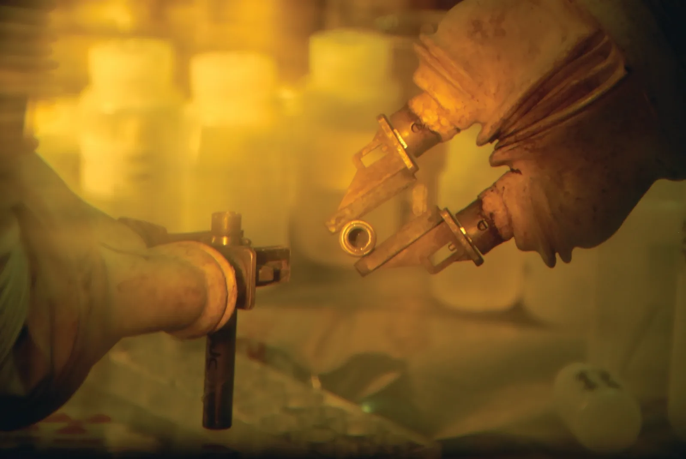
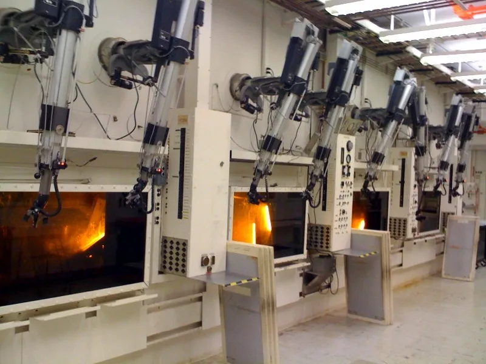

KEEPING CRITICAL SYSTEMS
OPERATING RELIABLY.
Focused maintenance, repair and engineering support for remote-handling and shielded equipment.
Choose the system you need help with.
A stiff manipulator, a viewing-window issue or a change to the enclosure each needs a different conversation. Start with the system involved.
Telemanipulator Maintenance & Repair
Service for master-slave manipulators, from component replacement through mechanical restoration and adjustment.
- Cable and tape replacement
- Seal integrity testing
- Booting installation
- Friction adjustment

Hot Cell Maintenance, Repairs & Modifications
Support for shielded enclosures and associated maintenance or modification requirements.
- Shielding integrity upgrades
- Airflow and HEPA repairs
- Custom port modifications
- Decontamination services

Hot Cell Window Maintenance & Repair
Maintenance support for lead-glass viewing systems and related sealing, fluid and surface issues.
- Gasket and seal replacement
- Fluid replenishment
- Surface polishing
- Leak detection
THE CELL IS THE BARRIER.
THE MANIPULATOR DOES THE WORK.
A hot cell is a shielded enclosure. A telemanipulator lets an operator outside move tools or materials inside. The viewing window, shielding and enclosure systems support that work. Select a marker in this simplified overview.
Telemanipulator
Remote mechanical handling lets operators work through the barrier while remaining physically separated from the task area.
A useful first conversation.
You do not need a completed diagnosis to get in touch. Tell us what you observed and which equipment is affected.
Identify the equipment
Include the system type and any available make or model information.
Describe what changed
Explain the symptoms, when they appeared and any relevant service history.
Share the constraints
Outline access requirements, operating context and the timing you are working with.
Agree the scope
Discuss the work required and the checks needed for the intended application.